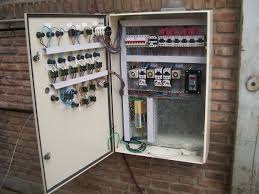
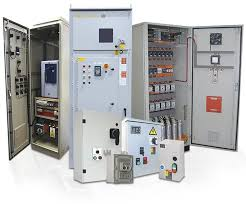

Bienvenidos a 3D AUTOMATIZACIÓN S.A.S
Aquí encontraran información sobre nuestros servicios
Servicios
- Diseño de Planos Eléctricos
- Programación de PLC y HMI
- Suministros Equipos Eléctricos
- Suministros Automatización
- Ensamble de Gabinetes Eléctricos
- Asesorias
Imágenes Tableros Eléctricos
Tableros de Control
Tablero de control instalado en industria metalmecánica
Tablero de una sub estación eléctrica
Deja la automatización de tu empresa en nuestas manos
Videos
Video de Youtube
Nota de interés
El futuro de la Automatización Industrial
Varadores de Velocidad
| Código | Nombre | Descripción | Stock |
|---|---|---|---|
| VV001 | Variador Schneider ATV312 | Este variador de velocidad de 3 fases Altivar 312 tiene una potencia nominal de 0,75 kW, 2,4 kVA, y una tensión de salida nominal de 380 V a 500 V CA. | 3 |
| El variador Schneider ATV312 es para uso general. | |||
| VV002 | Variador Siemens V20 | Disponible en tamaño FSA hasta 2,2kW y cubre un rango de potencia desde 0,12 kW hasta 15 kW en tensiones de red Monofásicas 220V y Trifásicas 400V. | 5 |
| El variador Siemens V20 es para uso general. |